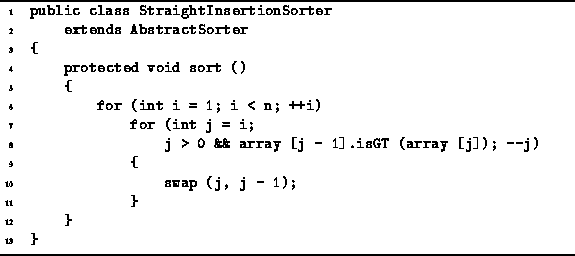

Data Structures and Algorithms
with Object-Oriented Design Patterns in Java
Data Structures and Algorithms
with Object-Oriented Design Patterns in Java
Program  defines the
StraightInsertionSorter class.
The StraightInsertionSorter extends the AbstractSorter class
defined in Program .
It simply provides an implementation for the no-arg sort method.
defines the
StraightInsertionSorter class.
The StraightInsertionSorter extends the AbstractSorter class
defined in Program .
It simply provides an implementation for the no-arg sort method.

Program: StraightInsertionSorter class sort method.
In order to determine the running time
of the sort method,
we need to determine the number of iterations of the inner loop (lines 7-11).
The number of iterations of the inner loop
in the  iteration of the outer loop
depends on the positions of the values in the array.
In the best case, the value in position i of the array
is larger than that in position i-1
and zero iterations of the inner loop are done.
In this case, the running time for insertion sort is O(n).
Notice that the best case performance occurs
when we sort an array that is already sorted!
iteration of the outer loop
depends on the positions of the values in the array.
In the best case, the value in position i of the array
is larger than that in position i-1
and zero iterations of the inner loop are done.
In this case, the running time for insertion sort is O(n).
Notice that the best case performance occurs
when we sort an array that is already sorted!
In the worst case, i iterations of the inner loop are required
in the  iteration of the outer loop.
This occurs when the value in position i of the array is smaller
than the values at positions 0 through i-1.
Therefore, the worst case arises when we sort an array in which the elements
are initially sorted in reverse.
In this case the running time for insertion sort is
iteration of the outer loop.
This occurs when the value in position i of the array is smaller
than the values at positions 0 through i-1.
Therefore, the worst case arises when we sort an array in which the elements
are initially sorted in reverse.
In this case the running time for insertion sort is  .
.
 Copyright © 1998 by Bruno R. Preiss, P.Eng. All rights reserved.
Copyright © 1998 by Bruno R. Preiss, P.Eng. All rights reserved.